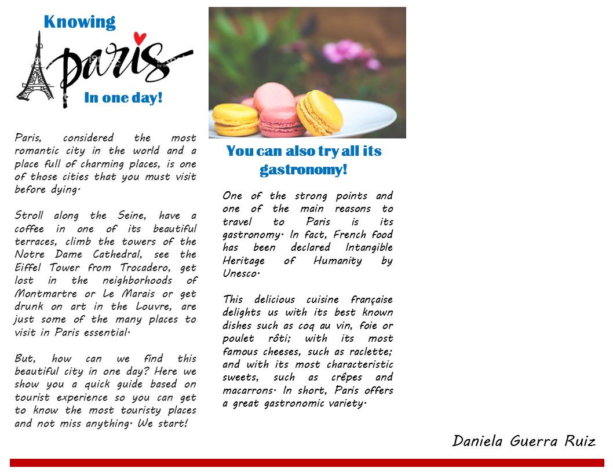
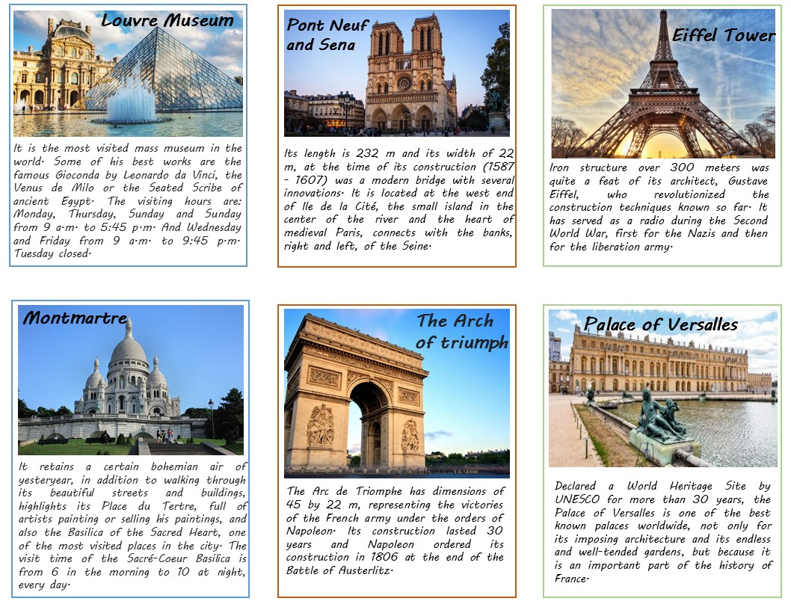

3.Tourist Animation
 
According to the UNWTO, tourist animation is any action carried out in or on a group, community or environment, with the intention of developing communication and guaranteeing social life. It is basically considered in 3 phases:
- First phase: Self-discovery, where the conditions are created so that the entire individual group discovers itself.
- Second phase: The relationship between the groups, the relationship with other individuals.
- Third phase: Creativity, by the confrontation of individuals and groups with their environment. Your expressions, your initiatives and your responsibilities.
Tourism animation is a trend that was born as a result of meeting the needs of consumers of tourism services. Currently there is a lot of competition in the hotel branches to be able to satisfy the guests, in short what a hotel should have is a room, good food, some cocktails and a pool. The tourist animations are characterized by:
Have good information and a friendly staff.
Comply with the philosophy of making them feel at home.
Have people who speak several languages.
Have specialized personnel in massages, cleaning services, etc.
Have recreation spaces, bookstore, spa, gym, etc.
Have spaces for the disabled and for babies.
Purposes of tourist animation
Create an atmosphere of communication between guests from different countries, age, sex, religion, through activities they perform.
Use of free time to earn a better quality of life.
Improve the profitability of the hotel, causing customers to repeat their stay again, also encouraging the entry of new guests.
Generate interest in the guests to know the customs and traditions of the region.
The function of animation is the adaptation to different forms of social life and also individual and group development. The functions of the tourist animation according to the UNWTO are:
- Social function: Integration of the individual in the social environment in which he finds himself.
- Cultural function: Direct contact with the culture, art and history of the region.
- Word of mouth market function: The recommendation of tourists, towards the establishment, allows the increase of their sales and the increase of their profits. The types of tourist animations are:
- Cultural animation: It refers to the museums and festivals of each country, the culture by itself is involved in animation for the attraction of tourism, dances, etc.
- Animation to integrate: Allows the formation of several subgroups with different characteristics so that they achieve the same goal, activities to relate, etc.
- Integral animation: There are three types of tourism animation: business tourism, adventure tourism and family tourism.

Questions
- 1. What are the characteristics of the tourist animations?
- 2. How was the tendency for hotels to implement tourist animations?
- 3. What are the functions of animation tourism?
Hotel trends


Vocabulary
- Sightseer = Tourist, hiker.
- Travel insurance = is insurance that is intended to cover medical expenses, trip cancellation, lost luggage, flight accident and other losses incurred while traveling.
- Budget = Is an estimation of revenue and expenses over a specified future period of time.
- UNWTO = World Tourism Organization.
- By: Daniela Guerra Ruiz
Next